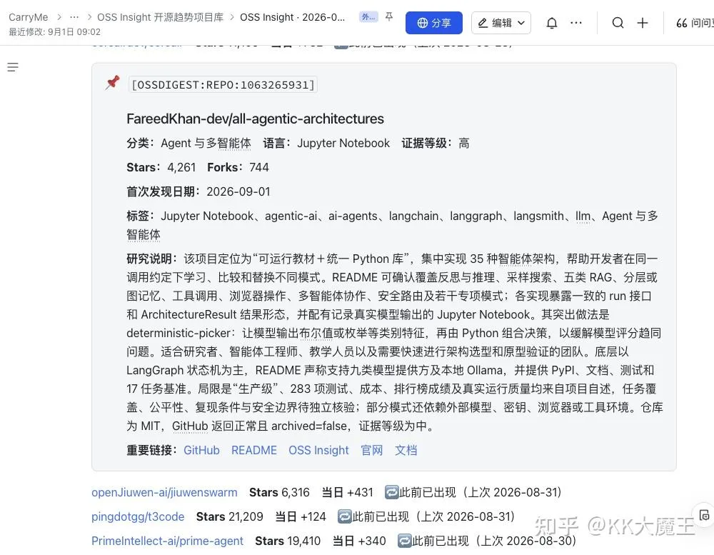
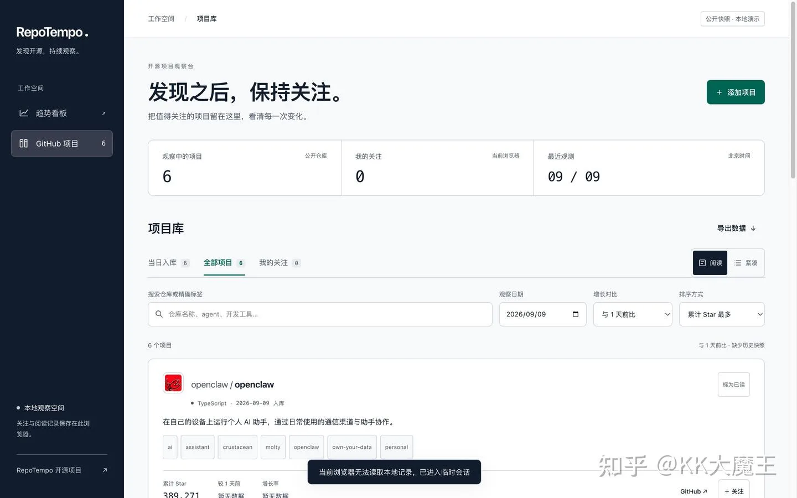
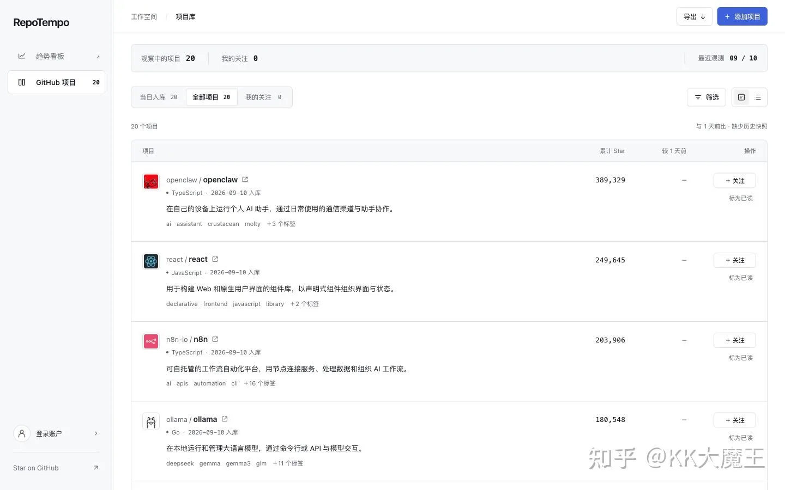
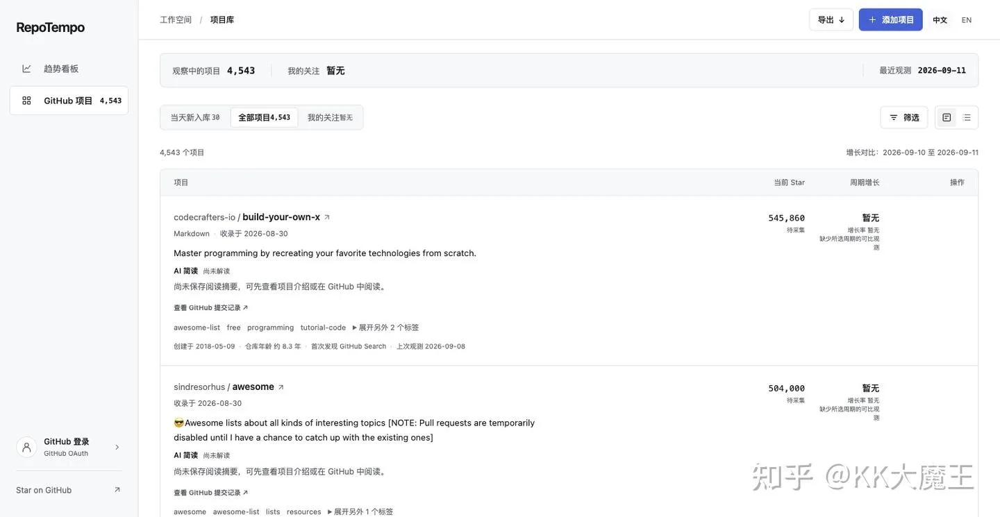

最近在写一个 GitHub 趋势跟踪的项目。
之前我习惯定期去扫 GitHub 的 Trending，但发现它每天展示的项目数量有限，其实上面还有很多有意思的项目没有被发掘出来。后来我找到了 OSS Insight，定期去爬它每天的排行数据并入库。数据入库之后，我会每天监控它们的增长情况，看看近期社区对哪些项目感兴趣。因为项目比较多，为了提高效率，我用 AI 统一做总结。然后每天会产出的飞书文档，都是免费公开的，里面做了一些简单分类，大家感兴趣的话可以去看看
不过前两天 OSS Insight 的数据源应该是被封挂掉了，所以我只能自己基于 GitHub daily 数据以及之前入库的历史数据重新搭建，顺便补充一些直接搜索的能力。

现在这个项目的目标主要是替代之前的方案，本来是做给我自己用的。我刚开始用 GPT-5.6 做设计，后来 GPT-6 出来之后又更新了一版，但整体界面还是很丑。
之前在 Claude 封我号之前，我一直用 Claude Design，体验非常棒；号被封后我换了 OpenDesign，当时 bug 比较多、体验一般，就删掉了。最近我重新用起 OpenDesign，发现效果超出预期：
- 产品体验比想象中好很多，丝滑很多，他们还是做了比较多的优化的
- 支持直接连接 Codex，配合GPT6做前端设计与修改，有一种“指哪打哪”的感觉，极大降低了前端修改的成本
如果大家有兴趣，可以用 OpenDesign 搭配 GPT-6 来做一些 Web 的小设计。在一些细节修复和整体修改上，体验确实非常好


